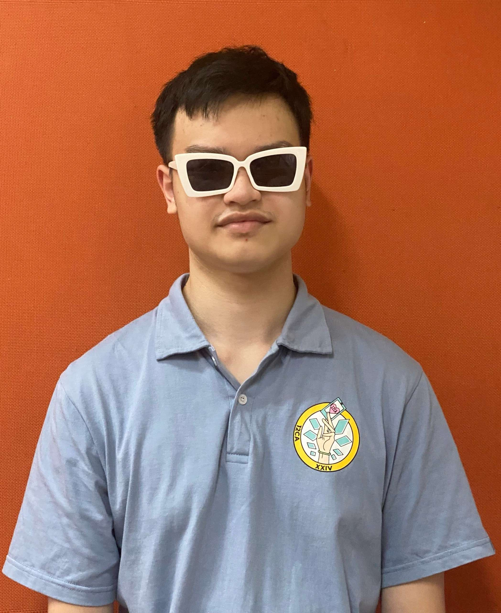

|
1.Chau Minh Tran:
My name is Chau Minh Tran (SID: 3978736), and I am currently a freshman majoring in Information Technology,
minoring in Data Analytics.
There are 3 interesting facts about myself that I would love to share. First and foremost, I used to be a
student majoring in Business Administration in Suffolk University, USA from 2019-2021. After 2 years of
foundational business exploration, I had found my career insight about Business Analytics and was about to
register for this field. However, due to an unfortunate family incident that took place in 2021 hence I
decided to come back to Vietnam to help my family (especially my mother and older brother) and find another
way to pursue my dream. In my rejuvenation period during my gap year, I luckily found out that RMIT offered
students a chance to attend Data Analytics minor, which I applied immediately because there was no better
chance than that.
This lore brings out another fact about me: I am 3 years older than most of my classmates. I always joke
about enjoying my life even more and the strong sense of coming back to my younger self by observing the
younger generation's spirit, instead of chasing after the fast-going temporary society.
Last but not least, I am fluent in more than 5 types of sports so it is really easy to explain how I loved
the game of sports at a young age. At a certain time until now, the passion ignited in me to become a sport
analyst.
As I mentioned above, I would love to work as a sports analyst in a sports industry. Due to the fact that
conventional sport is strongly synchronising with technology for the past few years, study and work in this
field definitely help me to understand about the enhancement of technology applied to human beings'
conventional entertainment, how it will shape our future lives and how it may entertain sports fans for
generations to come.
My experience in IT is considered to be narrow, because I just entered the field for quite a short time. I
am padding my knowledge about IT up by reading books and having a serious attitude in class to broaden my
knowledge regarding this field.
- Personality Test.
- Learning style Test.
- Career Test.
|
|
|
2.Nguyen Hai Nguyen
My name is Nguyen Hai Nguyen (SID:s3978275), this is my first year at RMIT university.
My time in University has been great ever since I started to know more and more people, I even joined a
football club and got to play every weekend. As a freshman I have encountered many difficulties while trying
to cope with the new way of study. However, with the help of some seniors I know from my time in secondary
school, I believe that I can succeed with all my academic goals.
My passion in this industry has been partly contributed by some of my relatives and most importantly my dad.
I have always been fascinated by the endless possibilities of technology myself and have always dreamt of
being able to make something cool on my own. I believe that RMIT university with its unique environment from
other public universities in Vietnam can help achieve that goal.
- Personality Test
- Learning style Test.
- Career Test.
|
|
|
3.Tran Duc Long
My name is Tran Duc Long (SID: s3978673), I’m currently a first year student at RMIT.
I am pursuing Artificial Intelligence as a minor in Information Technology.
I have been fascinated at how machines work ever since I got my Iphone.
I had a chance to interact with its AI which is Siri.
It was not as complicated as today's version, but it can run the program smoothly automatically.
With the development of Artificial Intelligence, people hardly need to do hard labour to complete the work.
The reason for choosing this particular field was because of my passion for automation,
which will bring simplicity to all works in our life.
- Personality Test
- Learning style Test.
- Career Test.
|
|

|
4.Nguyen Ha Tuan Nguyen
My name is Nguyen Nguyen Ha Tuan (SID: s3978072), I am currently a freshman in general IT, minoring Mobile &
Web development.
The fact about myself is that I have a huge interest in computers. I like to build them, seeing them work
and being in the Pc master race community, being able to pull out a better performance out of my machine has
always been my interest. At that time, being able to work on my laptop most of the time is my main goal when
stepping into university since it is the tool that has a close connection with me so I consider IT as one of
the options to pursue. However, it is not a blind pick when it comes to where I am now, I also have a huge
inspiration from content creators on youtube around programming, creating unique contraptions and machine
learning.
Throughout 10 weeks of studying code and micro computer, I see myself more as a “typist”, I enjoy doing code
more than learning about computer systems so I chose Mobile & Web development as a suitable playfield for me
to work and improve.
Looking further as a Mobile & Web developer, I expect to see opportunities for me in the near future as well
as an environment for me to improve my craft to keep up with our fast developing world.
- Personality Test
- Learning style Test.
- Career Test.
|